ストライク
6（強化 9）ダメージを与える。
Slay the Spire 2 MOD v0.9.2・全86枚・2026-11-22 更新
6（強化 9）ダメージを与える。

5（強化 8）ブロックを得る。

3（強化 5）ダメージを与える。
毒 4（強化 5）を付与する。

破滅 6（強化 8）を2回付与する。

すべての敵に毒 3（強化 4）を付与する。

毒 5（強化 7）を付与する。

破滅 14（強化 18）を付与する。

5（強化 7）ダメージを与える。
破滅 8（強化 10）を付与する。

2（強化 3）ダメージを与える。
毒 1（強化 2）を付与する。

破滅 7（強化 9）を付与する。
9（強化 11）ブロックを得る。
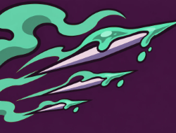
6（強化 8）ダメージを与える。
この敵が毒を持っていれば、毒 4（強化 5）を付与する。

毒 2（強化 3）を2回付与する。

すべての敵に破滅 9（強化 11）を付与する。

7（強化 9）ダメージを与える。
この敵の破滅がHPの半分以上なら、もう一度 7（強化 9）ダメージを与える。

3（強化 4）ダメージを3回与える。
（ストライク）
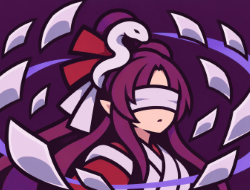
このターン、敏捷 3 を得る。
5（強化 8）ブロックを得る。

5（強化 7）ブロックを得る。
ランダムな敵に毒 2（強化 3）を付与する。
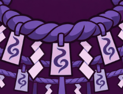
6（強化 7）ブロックを得る。
破滅 6（強化 8）を付与する。

2（強化 3）ダメージを与える。
活力 4（強化 5）を得る。

2（強化 4）ブロックを得る。
破滅を持つ敵がいれば、さらに 3 ブロックを得る。

カードを1枚引く。
ランダムな敵に毒 1（強化 2）を付与する。

カードを 2（強化 3）枚引く。
手札の毒か破滅を付与するカードを1枚アップグレードする。
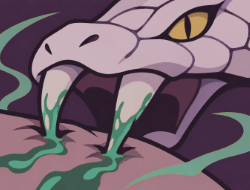
この敵の毒に等しいダメージを与える（毒は減らない）。
戦闘中は実際のダメージを表示。

HPを 3（強化 5）回復する。
最大HPを1増やす。
廃棄。

ターン開始時、ランダムな敵に毒 1 を 4（強化 5）回付与する。
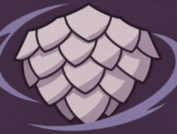
毒か破滅を付与するカードをプレイするたび、2（強化 3）ブロックを得る。
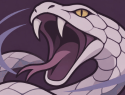
9（強化 12）ダメージに加え、敵の破滅の半分（切り捨て）の追加ダメージを与える。
戦闘中は実際のダメージを表示。

カードを 2（強化 3）枚引く。
このターン、次にプレイする毒か破滅を付与するカードのコストが0になる。

毒 2（強化 4）を付与する。
この敵の毒と同じ量の毒を、他のすべての敵に付与する。

毒 10（強化 13）を付与する。

この敵の破滅を2倍にする。
廃棄。

（強化で天賦）
毒を付与するカードは毒が1増える。

破滅を付与するカードは破滅が 3（強化 5）増える。

破滅 2（強化 4）を付与する。
カードを1枚引き、HPを1回復する（回復は1ターンに1回まで）。
このカードのコストが1減少する（この戦闘中）。
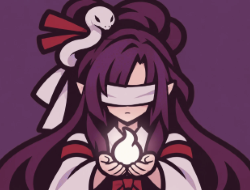
HPを10失う。
他のプレイヤー1人のHPを 15（強化 20）回復する。

破滅 10（強化 13）を付与する。
この敵の破滅がHP以上なら、エナジー1を得て、HPを2回復する。

ターン終了時、3（強化 4）ブロックを得る。

9（強化 12）ブロックを得る。このターンにプレイしたカード1枚につき3減る（9→6→3→0）。
このターン、筋力を4失う。
保留。
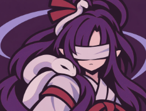
プレート 5（強化 7）を得る。
HPを2回復する。
廃棄。

6ダメージに加え、このターンにプレイした毒か破滅を付与するカード1枚につき 5（強化 6）ダメージを与える（このカード自身は数えない）。

カードを 2（強化 3）枚引く。
カードを1枚捨てる。

エナジー1を得る。強化するとさらにカードを1枚引く。
廃棄。

ランダムな敵に3ダメージを与え、毒 1 を付与する。これを 3（強化 4）回行う。

すべての敵に 6（強化 8）ダメージを与える。
すべての敵に毒 2（強化 3）を付与する。

15（強化 19）ダメージを与える。
この敵が毒を持っていれば、エナジー1を得る。

3（強化 5）ダメージを与え、カードを1枚引く。これを2回行う。
（1回の攻撃の2ヒットなので、活力は両方に乗る）

すべての敵に、それぞれが持つ毒と同じ量の破滅を付与する（毒は減らない）。
廃棄（強化で廃棄なし）。

8（強化 11）ブロックを得る。
カードを1枚引く。
手札のカード1枚にエセリアルを付与する。

このターン、毒を付与するカードは毒が1、破滅を付与するカードは破滅が3増える。
強化で保留が付く。

7（強化 9）ブロックを得る。
次のターン、カードを2枚引く。
毒か破滅を付与するカードをプレイするたび、ランダムな敵に毒 1 を付与する。
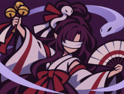
毒か破滅を付与するカードを3枚プレイするたび、カードを1枚引く。

攻撃を受けるたび、攻撃した敵に破滅 3（強化 4）を付与する。

敵が破滅で倒れるたび、他のすべての敵に破滅 16（強化 19）を付与する。

毒 3（強化 5）を付与する。
カードを1枚引く。
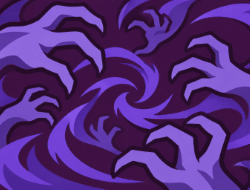
破滅 9（強化 11）を3回付与する。
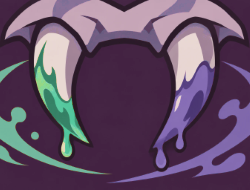
4（強化 6）ダメージを与える。
毒 3（強化 4）と破滅 7（強化 9）を付与する。

HPを回復するたび、このターン筋力 1（強化 2）を得る。
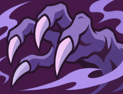
4（強化 6）ダメージを与える。
この敵が破滅を持っていれば、破滅 12（強化 15）を付与する。

破滅 40（強化 55）を付与する。
廃棄。

敵の毒をすべて取り除き、その3倍の破滅を付与する。
強化で保留が付く。
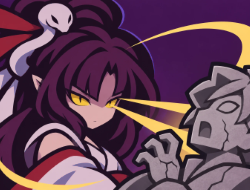
この敵をスタンさせる。
廃棄。
毒を付与するカードの毒が1.5倍（切り捨て）、強化で2倍になる。
2枚出しても2倍になる。

破滅 16（強化 19）を付与する。
この敵の破滅がHP以上なら、即座に倒す。

8（強化 13）ダメージを与える。
この敵の毒を1.5倍（切り捨て）にする。
その後、この敵の破滅をすべて取り除き、その1/3（切り捨て）の毒を付与する。廃棄。

6（強化 8）ダメージを与える。
この敵が毒と破滅の両方を持っていれば、ダメージが3倍（18／強化 24）になる。
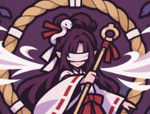
すべての敵に 14（強化 18）ダメージを与える。
自分の脱力・弱体・脆弱を取り除く。

3（強化 6）ブロックに加え、すべての敵の破滅の合計の3分の1（切り捨て）のブロックを得る。
マルチでは破滅の部分だけ、破滅を使うプレイヤー（蛇の巫女・ネクロバインダー）の人数で割る。

ターン開始時、ブロックがすべて消えず、3分の1（切り捨て）残るようになる。
強化で半分残る。

すべての敵の毒の合計の1/2（切り捨て）だけ、HPを回復する。マルチではさらに、毒を使うプレイヤー（蛇の巫女・サイレント）の人数で割る。
廃棄。

すべての敵の毒を、今すぐ 1（強化 2）回発動させる（毒は減らない）。

この敵の破滅の1/4（切り捨て）を取り除き、取り除いた分の半分（強化で全部）だけHPを回復する。
廃棄。

破滅を持つ敵へのアタックが、1ヒットごとにその敵の破滅の1/10（強化 1/8、切り捨て）だけ増える。
マルチでは、破滅を使うプレイヤー（蛇の巫女・ネクロバインダー）の人数で割る。

2ダメージを与え、破滅 2 を付与する。これを 5（強化 7）回行う。

破滅を持つ敵が毒でHPを失うたび、失った量の半分（切り捨て）の破滅を得る。
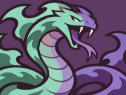
毒と破滅の両方を持つ敵は、毒と破滅の合計がHP以上になった瞬間、破滅で倒れる。

ターン開始時、エナジー1を得て、カードを1枚多く引き、自分に毒 3 を付与する。
自分が毒で失うHPは半分になる。
自分の毒が発動するたび、すべての敵に自分の毒と同じ量の毒を付与する。
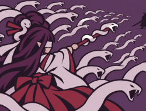
7ダメージを与え、5ブロックを得る。
手札に噛みつきと舌先を1枚ずつ加える（強化で、強化済みのものを加える）。
エセリアル。

現在のHPの3分の1（強化 4分の1、切り捨て）を失う。
毎ターン、最初にプレイする毒を付与するカードと、破滅を付与するカードが、それぞれもう1回発動する。

このターン、毒か破滅を付与するカードのコストがすべて0になる。
カードを 1（強化 2）枚引く。廃棄。

コスト0のカードをプレイするたび、カードを1枚引く（1ターン3回まで）。

ターン開始時、すべての敵に破滅 8（強化 11）を付与する。
バッファー 1 を得る。
7（強化 9）ブロックを得る。
山札のカードを2枚選んで廃棄する。

破滅 7（強化 9）を3回付与する。
天賦。
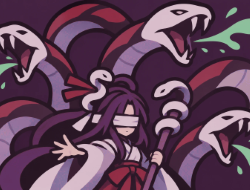
敵1体に2（強化 3）ダメージを与え、毒 1 を付与する。これを 8 回行う。
（毒蛇が「古びた歯」で変化するカード）